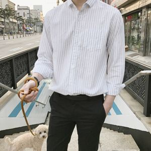
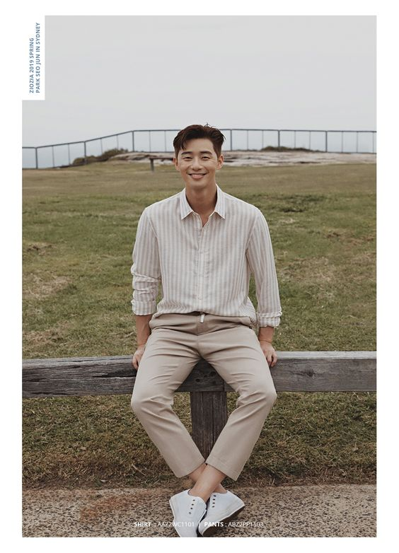
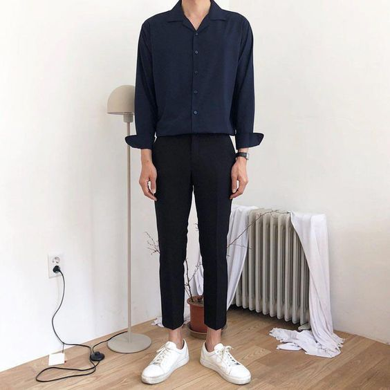
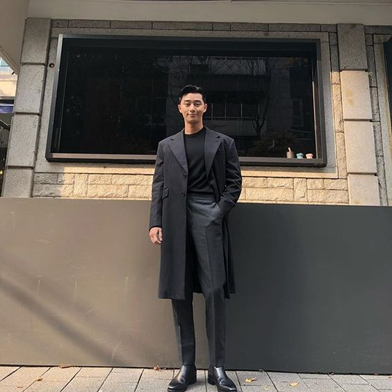
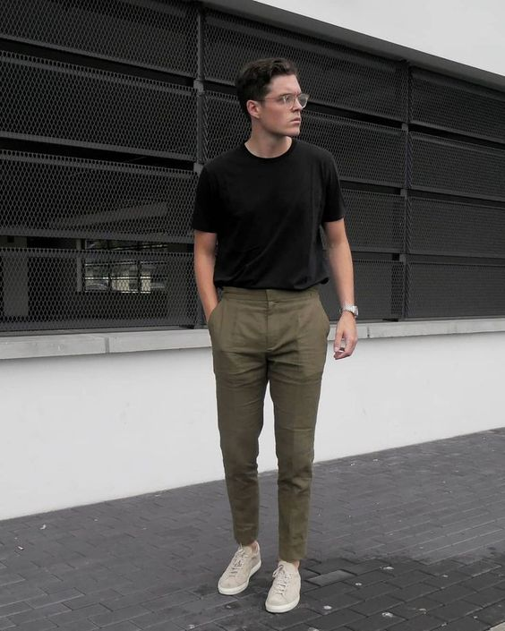
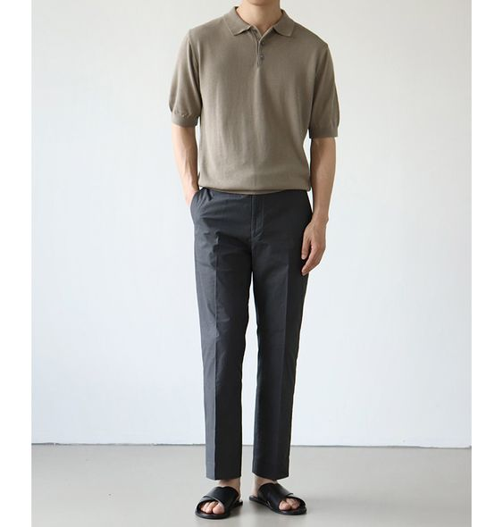
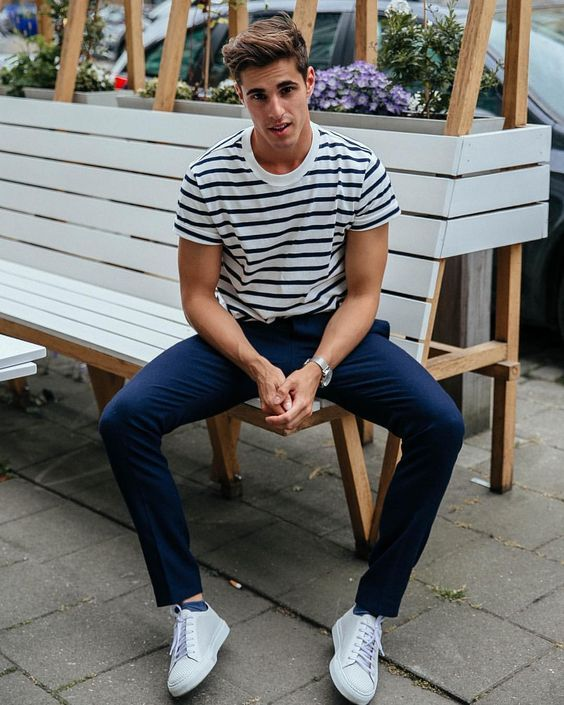
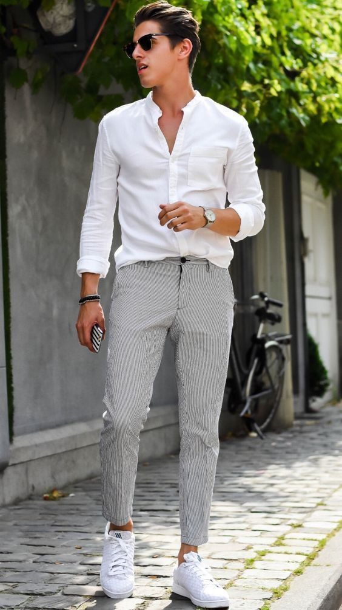
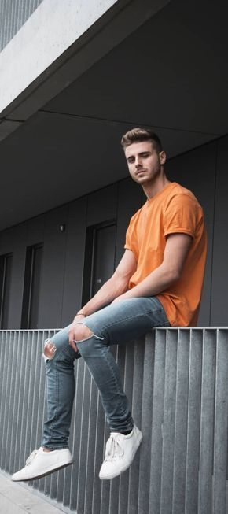

|
 สไตล์การแต่งตัวชาย นั้นมีหลากหลายพอๆกับผู้หญิงเลยแหละ แต่หนุ่มๆบางคน นั้นก็ไม่ได้ชอบแต่งตัวอะไรเยอะแยะมากมาย และแน่นอนว่าสาวๆบางคนก็ชอบผู้ชายที่แต่งตัวเรียบง่าย สบายๆ ชิลล์ๆ สุดๆแล้ว คงจะหนีไม่พ้น สีฟ้าอ่อน สีเทาอ่อน และสีขาว สีเบสิคเหล่านี้หนุ่มๆควรมีติดไว้ในตู้เสื้อผ้าเลยแหละ****************************  แมทช์ลุคเรียบง่ายของคุณให้ดูเท่และเป็นทางการขึ้นอีกนิดด้วยเสื้อสีพื้นแขนยาว ทรงสวยๆ เนื้อผ้าดีๆ สักตัว แค่นี้ก็ดูหล่อขึ้นเป็นกอง เสื้อเชิ้ตสีพื้นและจับคู่ไห้สีเดียวกับกางเกงแลดูเป็นลุคสบายๆเรียบง่ายและน่ามองสุดๆ
 หลักการแต่งตัวให้ดูดี คือมี 3 ชิ้น แต่ถ้า Blazer จะดูทางการไป ก็ลองเสื้อเชิ้ต เพราะเสื้อเชิ้ตไม่ได้มีไว้แค่ใส่ติดกระดุมธรรมดาๆ แต่สามารถเป็นเสื้อคลุมเท่ๆ ใส่สบายชิลล์ๆและดูหล่อเท่ ได้อีกด้วย
 เสื้อเชิ้ตเป็นอะไรที่คลาสสิคสำหรับสไตล์การแต่งตัวชาย เพราะใส่ได้ทั้งแบบ Casual และทางการจริงๆ ลองหาเสื้อเชิ้ตทรงสวยๆเนื้อผ้าดีๆ อย่างผ้า Oxford หรือผ้าลินินก็ทำให้คุณได้ลุคแบบสบายๆ ชิลล์ๆ สุดๆแล้ว ส่วนโทนสีที่ดูดีเหมาะกับทุกคนเป็นการแต่งตัวที่เบสิคสุดๆ แค่คุณมีกางเกงยีนส์ดีไซน์ดีๆ เนื้อผ้าดีๆสักตัว จะใส่ไปไหนก็หล่อ สีฟอกซีดแบบนี้ก็เท่แบบเซอร์ๆได้ ส่วนเสื้อถ้าจะให้ดีก็ควรเป็นสีขาว สีเทา Top dye หรือสีดำไปเลย ใส่ง่ายได้ตลอด แถมเข้ากับกางเกงยีนส์ทุกสีเฉดอีกต่างหาก
 โทนสีเสื้อผ้าก็เป็นสิ่งสำคัญที่หนุ่มๆต้องให้ความสำคัญนะ พอยิ่งเราแต่งตัวเบสิคมากๆ ก็ควรเลือกกางเกงให้เข้ากับเสื้อจะดูดีเลยทีเดียว  หนุ่มๆอาจไม่คุ้นกับการใส่ เสื้อยืดแขนยาว เพราะอากาศประเทศไทยก็ร้อนแสนร้อน แต่หนุ่มๆลองหาเสื้อตัวไม่หนามากแล้วพับแขนขึ้น เนื้อผ้าระบายอากาศดีๆสักตัวดู ช่วยให้ดูดี แบบไม่ขี้เล่นมากไปด้วย เป็นอีกไอเทมที่ใส่แล้วดูดีแน่นอน
 เสื้อเชิ้ตชิ้นสำคัญที่ขาดไม่ได้เลยสำหรับ การแต่งตัวของผู้ชาย เพราะเป็นอะไรที่ใส่ ได้ในตัวเดียว ขึ้นอยู่กับการมิกซ์ของเรา เสื้อเชิ้ตก็มีหลากสไตล์ ไม่ว่าจะแขนสั้นหรือแขนยาว สีพื้น ๆ หรือมีลวดลายกราฟิกก็ดีย์
|
|
|---|